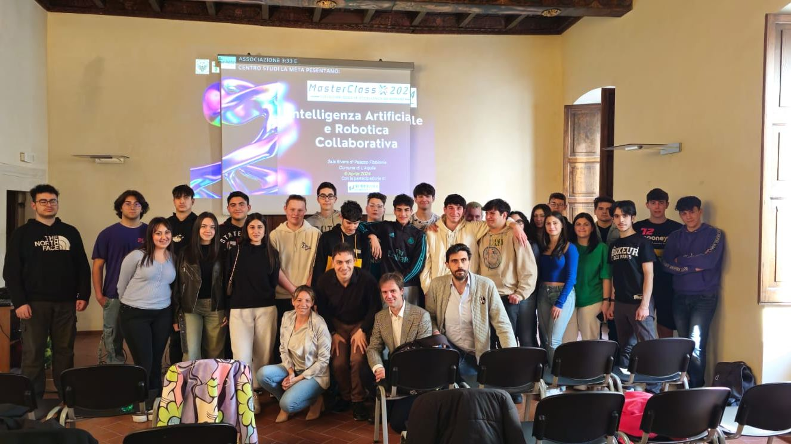
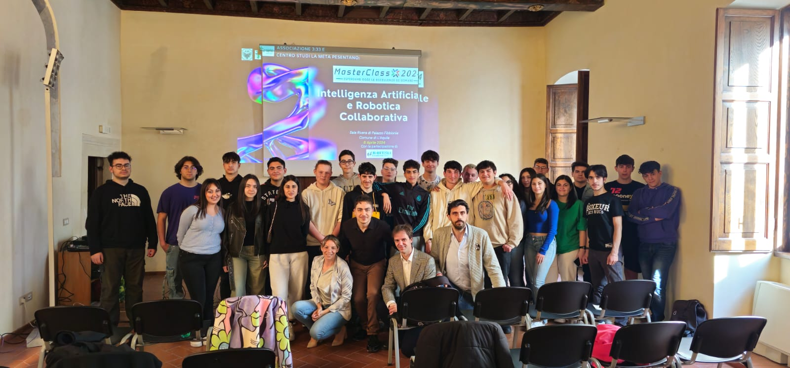

In occasione del quindicesimo anniversario del terremoto che ha colpito L’Aquila, si è tenuto presso la Sala Rivera di Palazzo Fibbioni il terzo seminario del programma MasterClass 2024 organizzato dal Centro Studi “La Meta” ed Associazione Culturale Residenti nei Centri Storici “3:33”.
Il seminario dal titolo “Intelligenza Artificiale e Robotica Collaborativa” è stato condotto dal Dr. Paolo Giammatteo che, in qualità di esperto in materia, ha fornito ai 40 partecipanti una panoramica sul funzionamento del machine learning e dell’IA, anche generativa, toccando i punti salienti dello stato dell’arte della tecnologia, le sue applicazioni innovative e le sfide tecnologiche ed etiche che l’umanità è chiamata ad affrontare con urgenza nel prossimo futuro. Il Dr. Giammatteo ha inoltre presentato la visione innovativa dell’Associazione 3:33 per la rivitalizzazione dei centri storici, il cui focus sulla valorizzazione del patrimonio storico e culturale della città è basato sulla modernizzazione e sull’utilizzo di tecnologie avanzate, come droni e robot collaborativi.
L’incontro ha messo in luce il dibattito globale in corso fra questioni fondamentali riguardo alla responsabilità etica nello sviluppo e nell’uso delle tecnologie emergenti, enfatizzando la necessità di un approccio prudente e bilanciato che garantisca benefici senza trascurare le potenziali implicazioni etiche e sociali.
Nel contesto emotivo dell’anniversario del sisma, il presidente dell’Associazione 3:33, Dr. Mirko Rocci, a margine dell’incontro ha rimarcato l’ambiziosa visione dell’associazione per un futuro in cui modernità e tradizione coesistano in armonia nei centri storici. “Questo seminario rappresenta uno spunto di riflessione cruciale nel dialogo tra passato e futuro. Affrontando le sfide della modernità con soluzioni innovative, possiamo preservare il nostro patrimonio culturale trasformando la nostra città in un modello di sostenibilità e vivibilità”, ha affermato Rocci. “Abbiamo davanti a noi l’opportunità di reinterpretare i nostri spazi urbani, abbracciando la tecnologia per migliorare l’esperienza di chi visita, lavora o è residente nei centri storici. Noi, come 3:33, che non a caso prende il nome dal minuto dopo il terremoto del 6 aprile 2009, rendiamo netta la nostra impostazione d’avanguardia, radicalmente proiettata verso il futuro. Riteniamo che L’Aquila, per la sua rilevanza, posizione geografica, dimensioni contenute, patrimonio artistico, tessuto industriale e universitario, con una ampia dotazione di infrastrutture rimodernate in seguito al sisma, sia un laboratorio ideale ed irripetibile per mostrare al mondo intero come l’introduzione mirata e consapevole di tecnologie di frontiera come droni e robot collaborativi, magari integrati anche con modelli di IA generativa in stile ChatGPT, possano concretamente aiutare i cittadini, sviluppando nuovi paradigmi di vita nei centri storici. Grazie a questi strumenti e alla loro interazione diretta con il cittadino è possibile pensare a forme di assistenza che spaziano dalla micro-logistica alla sicurezza, senza tralasciare aspetti informativi, formativi e persino ludici. Dove in molti vedono una minaccia, noi riteniamo che le nuove tecnologie, se adeguatamente impostate e sfruttate, possano essere un valido alleato che non solo non mina valori identitari e tradizionali di un centro storico, ma li custodisce, difende e promuove. Questo è il momento giusto.” conclude il presidente Rocci.
Anche la Dott.ssa Claudia Pagliariccio, presidente onorario del Centro Studi La Meta, ha espresso parole di apprezzamento per l’evento: “Celebrando il quindicesimo anniversario del sisma che ha toccato così profondamente L’Aquila, la lezione di oggi rappresenta un ponte tra il nostro passato e il futuro che desideriamo costruire. Attraverso gli argomenti trattati, abbiamo esplorato le immense possibilità che la tecnologia basata su IA offre anche per la formazione dei ragazzi, tema su cui il Centro Studi La Meta fonda le sue radici e la sua missione. È fondamentale che, nel perseguire questi avanzamenti tecnologici, rimaniamo ancorati ai valori di etica e responsabilità. Condividiamo la visione per L’Aquila come città laboratorio che abbraccia il futuro senza dimenticare il proprio passato, utilizzando l’innovazione per creare un tessuto urbano che sia sicuro, vivibile e rispettoso della sua ricca storia e cultura. Siamo entusiasti di contribuire a questa trasformazione, lavorando insieme per implementare soluzioni tecnologiche che arricchiscano la vita di tutti i cittadini”.
Il prossimo appuntamento di MasterClass 2024, previsto per il 13 aprile alle ore 15:00 presso la Questura di L’Aquila, continuerà a esplorare temi di rilevanza sociale con un seminario dedicato alle sfide poste dalle sostanze stupefacenti e psicotrope di vecchia e nuova generazione.
Il video viene caricato da YouTube solo quando premi play. Guarda su YouTube
